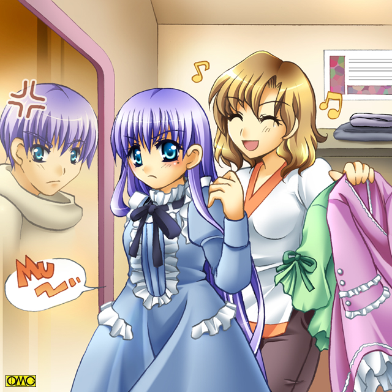

このイラストはＯＭＣによって作成されました。
クリエイターの白夜ゆうさんに感謝！
「ＴＳ館」のイメージキャラクター。
るい（♀。♂バージョンの表記は留依）です。
後ろは実の姉の結衣。
可愛がってあげてください。
用語集です。
よかったら編集にご協力ください
（２００９／６／９ ＠ｗｉｋｉの方へ移転しました）
ＴＳ短編作品集
『少年少女文庫』に投稿した物を許可を得て再掲載しています。
またそれ以外の短編もここにあります。
なお『少年少女文庫』とは『少年が少女になっちゃう』お話を専門に取り扱っているサイトです。
当然この作品群もそう言うお話です。
基本的に掲載バージョンを載せています。
そのため後書きなども『少年少女文庫』さん向けのそのままです。
御意見。感想などを頂けると幸いです。
読者参加型実験作
「乙女実習」
ウィキペディアを利用した合作企画です。
既にあるストーリーに手を加えたり
新規に作成が可能です。
「乙女実習」
更新情報
１６／ ３／２５ 「オレが女になったなんて絶対に認めないんだからねっ」アップ
１６／ １／２１ 「湯の町奇談」最終話リライトバージョンにイラスト追加（絵師・高天リオナさん）
１６／ １／ １ 「童女係長」アップ
１５／１１／２１ 「湯の町奇談」最終話リライトバージョンにイラスト追加（絵師・高天リオナさん）
１５／１１／１４ 「とらぶる☆すぴりっつ 二軒目」アップ
１５／ ９／２１ 「湯の町奇談」第四話リライトバージョン掲載とイラスト追加（絵師・高天リオナさん）
１５／ ７／２１ コミックマーケット８８新刊「Ｆａｋｅ Ｂａｓｋｅｔ」第一話先行公開「エピソード１ Ｆａｋｅ Ｂａｓｋｅｔ」
１５／ ５／２１ 「湯の街奇談」第三話リライトバージョン掲載とイラスト追加（絵師・高天リオナさん）
作品群
☆はイラスト・ＭＯＮＤＯさん
| 『ボーダーレス』 | 『Ｍａｉｄ ｏｆ Ｆｉｒｅ』 | 『着せ替え少年』シリーズ | 華代ちゃんシリーズ （原作。真城悠様） |
| 『１９９９年７の月で始まるあまりにも有名な大予言。 その真相とは？』 （変身） |
『Ｖｏｌ１』 『Ｖｏｌ２』 『Ｖｏｌ３』☆ 『Ｆ』 『Ａｎｏｔｈｅｒ Ｅｎｄｉｎｇ』☆ 「後日談〜ありすの休日〜」☆ （変身） |
服に着られてしまう上に性転換してしまう 超特異体質の少年つかさくんの受難の日々。 （変身） メインページへ |
『老人と少女』 ｢大きなおなか｣ |
| ｢ハンターシリーズ｣ （原作・真城悠様） |
『ベッタベタ』 | 『ＦＭＳ』シリーズ （原作。夜夢様） |
『湯の街奇談』 |
| 華代ちゃんシリーズからスピンアウトした作品です。 その城弾作のものを （変身） 一覧へ |
入れ替わることのできる双子姉弟。 それぞれが恋をしていて… （入れ替わり） （イラスト製作・ちはなえさん） |
世紀の奇病。ＦＭＳ（女変症）がもたらすドラマ。 （変身） 『ＦＭＳ：ｐａｔｔｅｒｎ Ｎ』 |
『子宝の湯』につかってしまって女になってしまった青年の運命は？ （変身） 第一話（第一話リライトバージョン） 第二話（第二話リライトバージョン） 第三話（第三話リライトバージョン） 第四話（第四話リライトバージョン） 最終話（最終話リライトバージョンン） リライトバージョンイラスト作成・高天リオナさん 「湯の街余談」 （イラスト製作・＊ミチル＊さん） |
| 『美少女組長奮戦記』 | 「同居人」 | 『城弾シアターキャラクター新年会』 | 「いきなりＦ」 |
| ヤクザの組長が美少女に変身？ スラップスティックコメディ （城弾オリジナル） （イラスト製作・紫咲桂麻さん・ｍｒ２さん） (掲載バージョン）☆ |
同居している甥が薬で性転換。
「同居人」 同居人〜ｉｆ〜 |
少年少女文庫さんに投稿した作品のキャラが新年会を。 その中で語られる後日談と構想など （未投稿作品） |
大きな胸の大好きな青年が 極端に胸の大きな女性と入れ替わってしまった その胸が原因で四苦八苦。 （入れ替わり） （イラスト製作Ｍａｋｉｙａさん） |
| 「とらぶる☆すぴりっつ」 | 「戦乙女セーラ」 | 「ＧＴＢ」 | 「アンテナショップ」 |
|
酒に酔うと女性になる呪いをかけられたー族の末裔。 四杯目「呑まれたら小さな恋？」 五杯目「呑まれたら夜明けのコーヒー」 六杯目「呑まれたら初体験？」 最後の一杯「呑まれたら大団円」 二軒目 |
太古の日本。 命がけで魔物と戦った三人の戦乙女。 時を経て魔物「アマッドネス」復活。 それに呼応するように少年は戦乙女へと変身する。 「戦乙女セーラ・メインページ」 |
１７歳になったら異性として一年間過ごさなくてはならない。 （変身・♀→♂） 四月編（イラスト・白夜ゆうさん） |
女性化臨床実験として集められた六人の男。 （イラスト・高天リオナさん） 中編 後編 |
| 不屈のスケベ | 女の園のお庭番 | スクランブル アイドル |
女装趣味 |
| 篁満は勉強が出来スポーツ万能で見た目もよいが 極度のスケベで女子に嫌われていた。 ある日女子更衣室潜入を案じていたら 自身が少女の姿になって… （変身） 「不屈のスケベ」 （城弾シアターバージョン） |
東条家令嬢。 姫乃の警護役。 現代の忍びの笠間次郎太は任務のため女になって ルームメイトに。 （変身） 「女の園のお庭番」 |
グラビアアイドルなのに 極端に気の小さい妹の代りに 兄が妹の肉体に入り代役を？ （入れ替わり） スクランブルアイドル （クライマックスバージョン） |
お堅い社長秘書・ 萩原和幸の誰にもいえない趣味は「女装」 ある夜不思議な神社で 祈りをささげたら？ （変身・女装の要素もあり） 「女装趣味」 （イラスト・Ｇ順さん 皆瀬七々海さん） |
| 人の気も知らないで | 仮面ライター ディレイド |
おとり捜査 | ゴッドファーザー 乙女 |
| 一卵性双生児の兄。 中森息吹は事故で少女の肉体に。 それを妬む双子の弟・静香は男の娘… （変身と…） イラスト・静華さん 「人の気も知らないで」 静香の視点から描いたバージョン 「あたしの気も知らないで」 |
あの『仮面ライダーディケイド』のパロディ。 少年少女文庫さんにおいての ＴＳバトルヒロインの世界を渡り歩くディレイド。 その「セーラの世界」編 （変身） 第４話『おびえるセーラ』 第５話「勇気」 |
痴漢対策で女性に変身しておとり捜査をする捜査官。 ＯＬ風だけではなくとんでもない姿でもおとりになることに （変身） おとり捜査 |
荒れた高校に赴任してきたのはうら若き女性。 女教師はかつては男だったと主張するが （変身） （絵師・高天リオナさん） Ｌｅｓｓｏｎ１ Ｌｅｓｓｏｎ２ Ｌｅｓｓｏｎ３ Ｌｅｓｓｏｎ４ |
| おりおん | 奥さまはＴＳ娘 | ＮＯ ＳＩＳＴＥＲ ＮＯ ＬＩＦＥ |
鈴木君と佐藤君 |
| 片桐伊織は男の子。 しかし汗をかくと 女になる体質に （変身） （絵師・琉菜さん） 第一話 第二話 |
元・男のりんは桜田達之の妻に。 いい妻。いい女になろうと悪戦苦闘するりんだが… （変身） 奥さまはＴＳ娘 |
普通の高校生。 小早川一大は脳内妹の季実子と入れ替わってしまう。 そこに実の妹・美咲が絡み… （変身？ 入れ替わり？） ＮＯ ＳＩＳＴＥＲ ＮＯ ＬＩＦＥ |
事故で変身してしまった二人の少年。 ふたりのたどった日々はあまりに違い… （変身と…） 鈴木君と佐藤君 佐藤君と鈴木君 （上記作品の反対側の視点で描いたもの） |
| ＴｉｇｅｒＳ２０１２ | カレンダーガール | Ａｎｇｅｌ Ｖｏｉｃｅ | 後天性ツインズ |
| 阪神が勝つと女性化する呪いをかけられた 阪神ファンの主人公。藤村実。 阪神には勝ってほしいが 女にはなりたくないジレンマが… （変身） ＴｉｇｅｒＳ２０１２ |
姫栗新は背中を女にたたかれると その女と入れ替わる体質。 それを利用して様々な少女が 彼の体を借りに来るが… （入れ替わり） カレンダーガール |
女性化臨床実験の次段階の被験者は 女性声優になった。 演技で恋人同士を演じるうちに 親友に対して本当に恋をして… （変身） Ａｎｇｅｌ Ｖｏｉｃｅ |
不思議な石によって『願い』が全部かなってしまい 男女に分裂した二人。 性欲に忠実な美少年と潔癖な美少女 そして「少女」には本来の男としての人格も 第１話「分裂」 第２話「荒れる学園」 第３話『狂想曲・真夏のビーチサイド』 第４話「Ｗの喜劇／ヒロインは金髪ツインテール」 第５話「亜留葉と平太とクリスマスプレゼント」 |
| とりすた | ジャンプアップ ジャンプダウン |
突き抜け | ＴＳ風邪 |
| 自分を変えたいと思う少年、 燕裕次郎はギャル風の先輩烏丸美奈子に連れられ 潰れかけた部「トリックスター部」へと。 そこで高校生活を変える体験をすることに。 （変身） とりすた〜いかにも第一話のような話〜 （絵師・Ａｋｉｙｏさん） |
２００７年元日。 初詣で祈ったら入れ替わってしまった 兄妹はそのまま新しい姿で 新しい人間関係を築くが ジャンプアップ ジャンプダウン |
筋骨隆々の大男が 鍛えすぎた結果「男」を突き抜け 「幼女」に変身？ しかもその弟は重度のロリコンで… 突き抜け |
引くと女体化するＴＳ風邪。 それが引き起こす悲喜劇 （変身） Ａ型 Ｂ型 |
| 肉食人生 | 童女係長 | オレが女になったなんて 絶対に認めないんだからねっ |
|
| 任意で女性になれる千田広海は 本来の男として女性の恋人がいるにもかかわらず 女として肉体関係を。 さらには男女それぞれで同性愛にも走り…… （変身） 肉食人生 |
花見の帰り迷い込んだ神社で した部下たぢの「願い」が 彼らの上司・比米輝夜４３歳を ７歳の童女に変えた。 童女の係長を中心にしたドタバタ劇 （変身） 「童女係長」 |
病気で性転換した少年・美樹彦。 完全に心身ともに女子なのに 頑として認めず 「自分は男」と言い張るが 親友の男子に恋してて…… （変身） オレが女になったなんて 絶対に認めないんだからねっ |
女装もの
| くらくら | |||
| 加々美桜（♂）が出会ったのは転校先で出会ったのは 女性用の衣類を普段着にしている美少年。倉田正宗だった。 そのあまりに突拍子もない思考に頭くらくら… （絵師・町田文鳥さん） 「くらくら」 |
５０万ヒット記念作品
「オールスタークロスオーバー」
二村司が通う学園には、どこかで見たような生徒たちがいた。
人体実験で女子高生メイドになってしまったありす。
亡妻の魔力で少女となったヤクザの組長だった久美。
入れ替わることのできる双子。柴田姉弟。
水を被ると女になる赤星みずき。
そして戦乙女セーラこと高岩清良。
学園に迫る凶悪なドラゴンアマッドネスにセーラは挑むが…
１００万ヒット記念企画
「城弾シアター」１００万ヒットを記念した大宴会。
「ＰａｎｉｃＰａｎｉｃ」「ＰＬＳ」
「着せ替え少年」「戦乙女セーラ」「ゴッドファーザー乙女」という
作品のキャラ達が一同にかいして
まともにすむはずがない？